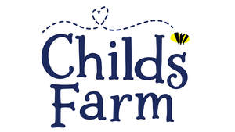

Trade Mark Journal No.2025/022 30 May 2025
UK00004202563 13 May 2025 (3,5,9,16,18,21,25,28,35)

- Class 3
- Non-medicated cosmetics and toiletry preparations; non-medicated dentifrices; perfumery, essential oils; bleaching preparations and other substances for laundry use; cleaning, polishing, scouring and abrasive preparations; body cleaning preparations; soaps; body toning preparations; body moisturising preparations; face cleaning preparations; face toning preparations; face moisturising preparations; cosmetics; deodorant; shaving preparations; skin care preparations; hair care preparations; hair styling preparations; shampoos; conditioners; hair colouring preparations; tanning preparations; sun care preparations; after sun preparations; home fragrancing preparations; hand wash; body wash; shower gel; face wipes; cleaning wipes; bubble bath; body moisturisers; face moisturisers; hand moisturisers; detanglers; SPF sun block creams; SPF sun block sprays; roll on SPF sun block; bath preparations; bath oil; bath soaks; bath lotion; bath bombs; bath salts; bath flakes; bath jellies; massage oils, gels and lotions; sleep mists; sleep balms; skin cream; hand cream; face cream; body cream; hair lotion; hair oil; skin lotion; cotton buds; face masks; cosmetic masks; sheet masks; shaving foam; shaving cream; hair relaxers; shower cream; shower oil; body scrubs; face scrubs; foot scrubs; salt scrubs; sugar scrubs; coffee scrubs; body lotion; body butter; body balm; body oil; body spray; foot balm; foot butter; body serum; face serum; hand serum; foot serum; body mists; micellar water; cleansing oil; exfoliating preparations; exfoliating creams; exfoliating scrubs; pomades; skin primer; bath milk; Baby oils; nappy cream (non-medicated); baby cream; baby powder; telon oil; colognes; bottle cleaning preparations; detergents; softeners; mouthwash; toothpaste; cosmetic sunscreen preparations; sun screen preparations; sun block preparations; sun care preparations; sun protection preparations; sun block [cosmetics]; baby shampoo, baby suncreams; baby lotions; baby bubble bath; baby body milks; baby care products (non-medicated); baby wipes; baby wipes impregnated with cleaning preparations; baby bottom balms, other than for medical purposes; baby hair conditioner; parts and fittings for all the aforesaid goods.
- Class 5
- Pharmaceuticals, medical and veterinary preparations; sanitary preparations for medical purposes; dietetic food and substances adapted for medical or veterinary use, food for babies; dietary supplements for human beings and animals; plasters, materials for dressings; material for stopping teeth, dental wax; disinfectants; preparations for destroying vermin; fungicides, herbicides; anti-bacterial preparations; disinfectant preparations; anti-bacterial soap; anti-bacterial handwash; anti-bacterial body wash; anti-bacterial shower gel; anti-bacterial hand cream; sanitising preparations; sanitisers for household use; disinfectant wipes; antiseptic preparations; antiseptic liquids; medicated moisturiser; mosquito repellents; anti-bacterial spray; vitamin preparations; vitamin C serum; vitamin mists; anti-bacterial dishwashing liquid; medicated ointments; antiseptic ointments; pharmaceutical preparations for inhalers; medicated dusting powders; medicated balms; balms for pharmaceutical purposes; medicated baby oils; medicated baby powders; baby bottom balms for medical purposes; food preparations for babies and infants; powdered milk for babies and infants; baby vitamins; baby food; parts and fittings for all the aforesaid goods.
- Class 9
- Scientific, research, navigation, surveying, photographic, cinematographic, audiovisual, optical, weighing, measuring, signalling, detecting, testing, inspecting, life-saving and teaching apparatus and instruments; Apparatus and instruments for conducting, switching, transforming, accumulating, regulating or controlling the distribution or use of electricity; Apparatus and instruments for recording, transmitting, reproducing or processing sound, images or data; Recorded and downloadable media, computer software, blank digital or analogue recording and storage media; Mechanisms for coin-operated apparatus; Cash registers, calculating devices; Computers and computer peripheral devices; Diving suits, masks for divers, ear plugs for divers, nose clips for divers and swimmers, gloves for divers, breathing apparatus for underwater swimming; Fire-extinguishing apparatus; apparatus for testing breast milk, other than for medical or veterinary use; baby monitors; baby scales; video baby monitors; baby alarms; walkie-talkies; protective helmets for children; children's educational software; electronic baby monitoring devices; digital thermometers, not for medical purposes; household thermometers; thermometers; thermometers not for medical purposes; baby thermometers; baby bath thermometers; software downloadable from the internet; mouse mat; sunglasses; recorded media; computer hardware and firmware; compact discs; digital music, mobile phone accessories; parts and fittings for all the aforesaid goods.
- Class 16
- Paper and cardboard; printed matter; bookbinding material; photographs; stationery and office requisites, except furniture; adhesives for stationery or household purposes; drawing materials and materials for artists; paintbrushes; instructional and teaching materials; plastic sheets, films and bags for wrapping and packaging; type of printers, printing blocks; bibs of paper; bibs, sleeved, of paper; activity books; baby books; baby books [storybooks]; baby memory books; books for children; activity books for children; books for children; books incorporating an audio component for children; drawing books; educational books; exercise books; picture books; printed activity books for children; printed books for children; printed coloring books; printed picture books; printed story books; story books; writing books; stationery; adhesives for stationery; printed publications; paint boxes for children; parts and fittings for all the aforesaid goods.
- Class 18
- Leather and imitations of leather; animal skins and hides; luggage and carrying bags; umbrellas and parasols; walking sticks; whips, harness and saddlery; collars, leashes and clothing for animals; backpacks for carrying infants; pouch baby carriers; reins for guiding children; sling bags for carrying infants; slings for carrying infants; parts and fittings for all the aforesaid goods.
- Class 21
- Household or kitchen utensils and containers; cookware and tableware, except forks, knives and spoons; combs and sponges; brushes, except paintbrushes; brush-making materials; articles for cleaning purposes; unworked or semi-worked glass, except building glass; glassware, porcelain and earthenware; abrasive mitts for scrubbing the skin; abrasive pads for kitchen purposes; abrasive sponges for scrubbing the skin; aromatic oil diffusers; baby baths, portable; bath sponges; bath brushes; cosmetic utensils; cotton waste for cleaning; disposable portable potties for adults and children; make-up brushes; make-up removing appliances; make-up sponges; soap boxes; soap dispensing bottles; soap holders; sponge holders; sponges for household purposes; stainless steel soap; stands for portable baby baths; toothbrushes; toothbrushes, electric; non-electric toothbrushes; body scrubbing puffs; bottle cleaning brushes; brushes for cleaning feeding bottles for babies; cleaning brushes for feeding bottle teats; cleaning brushes; cleaning mitts of fabric; cosmetics applicators; exfoliating mitts; facial buffing pads; hairbrushes; toothbrushes for children; body buffing mitts; cosmetic applicator mitts; self-tan applicator mitts; self-tan buffing mitts; tan remover mitts; body puffs; loofahs; hairbrushes for children; body sponges; cosmetic sponges; baby sponges; hair combs; parts and fittings for all the aforesaid goods.
- Class 25
- Clothing, footwear, headwear; adhesive bras; albs; ankle boots; aprons [clothing]; ascots; pants for babies [underwear]; bandanas [neckerchiefs]; bathing caps; bathing suits; bathing trunks; bath robes; bath sandals; bath slippers; beach clothes; beach shoes; belts [clothing]; berets; bibs, not of paper; bibs, sleeved, not of paper; boas [necklets]; bodices [lingerie]; boots; boots for sports; boot uppers; boxer shorts; braces [suspenders] for clothing; brassieres; breeches for wear; camisoles; cap peaks; caps being headwear; chasubles; clothing; clothing for gymnastics; clothing incorporating LEDs; clothing of imitations of leather; clothing of leather; coats; collars [clothing]; combinations [clothing]; corselets; corsets [underclothing]; cuffs; cycling gloves; clothing for cyclists; detachable collars; dresses; dressing gowns; dress shields; driving gloves; ear muffs [clothing]; embroidered clothing; espadrilles; face coverings [clothing], not for medical or sanitary purposes; fingerless gloves; fishing vests; fittings of metal for footwear; football shoes; footmuffs, not electrically heated; footwear; footwear uppers; furs [clothing]; fur stoles; gabardines [clothing]; gaiters; gaiter straps; galoshes; garters; girdles; gloves [clothing]; gymnastic shoes; hairdressing capes; half-boots; hanbok; hat frames [skeletons]; hats; headbands [clothing]; headscarves; headwear; heelpieces for footwear; heelpieces for stockings; heel protectors for shoes; heels; hoods [clothing]; hosiery; inner soles; jackets [clothing]; jerseys [clothing]; judo uniforms; jumper dresses; karate uniforms; kimonos; knickers; knitwear [clothing]; lace boots; latex clothing; layettes [clothing]; leggings [leg warmers]; leggings [trousers]; leotards; liveries; maniples; masquerade costumes; mitres [hats]; mittens; money belts [clothing]; motorists' clothing; muffs [clothing]; neckties; neck tube scarves; non-slipping devices for footwear; outer clothing; overalls; overcoats; paper clothing; paper hats [clothing]; parkas; pelerines; pelisses; petticoats; pockets for clothing; pocket squares; ponchos; pyjamas; rash guards; ready-made clothing; ready-made linings [parts of clothing]; sandals; saris; sarongs; sashes for wear; scarves; shawls; shirt fronts; shirts; shirt yokes; shoes; short-sleeve shirts; shower caps; ski boots; ski gloves; skirts; skorts; skull caps; sleep masks; slippers; slips [underclothing]; socks; sock suspenders; soles for footwear; spats; sports jerseys; sports shoes; sports singlets; sportswear incorporating digital sensors; stockings; stocking suspenders; studs for football shoes; stuff jackets [clothing]; suits; sweat-absorbent socks; sweat-absorbent stockings; sweat-absorbent underwear; sweaters; teddies [underclothing]; tee-shirts; thermal gloves for touchscreen devices; tights; tips for footwear; togas; top hats; trousers; turbans; underpants; underwear; uniforms; valenki [felted boots]; veils [clothing]; visors being headwear; waistcoats; waterproof clothing; welts for footwear; wimples; wooden shoes; eye masks; sleeping garments; articles of clothing; baby clothes; beach clothing; bodies [clothing]; body linen [garments]; bottoms [clothing]; casual clothing; casual footwear; footwear for children; headwear for children; clothes; clothing for babies; clothing for children; clothing for infants; clothing for men; clothing for women; denims [clothing]; face mask [clothing]; footwear for men; footwear for women; gloves as clothing; gussets for bathing suits [parts of clothing]; handwarmers [clothing]; clothing for infants; footwear for infants; jogging sets [clothing]; knitted clothing; linen (body -) [garments]; linen clothing; maternity clothing; one-piece clothing for infants and toddlers; parts of clothing, footwear and headgear; shorts [clothing]; silk clothing; slipovers [clothing]; slips [clothing]; sports clothing; sports garments; tops [clothing]; under garments; woollen clothing; wraps [clothing]; bodysuits; baby bodysuits; sleepsuits; bonnets [headwear]; bobble hats; sun hats; mitts [clothing]; undergarments for babies; cloth bibs; plastic baby bibs; parts and fittings for all the aforesaid goods.
- Class 28
- Games, toys and playthings; video game apparatus; gymnastic and sporting articles; decorations for Christmas trees; baby dolls; baby gyms; baby rattles incorporating teething rings; baby swings; baby swings for playgrounds; baby toys; multiple activity tables for children [playthings]; play cosmetics of plastic for children; electronic educational game machines for children; electronic games for teaching children; hoops for children; infant development toys; inflatable air vehicles [toys]; inflatable bath toys; inflatable beach balls; inflatable boats [toys]; inflatable bop bags; mamobiles for children; multiple activity toys for babies; multiple activity toys for children; musical toys for cots for babies; playhouses for children; playing cards; rattles for babies; squeeze toys for infants; toys for children; tricycles for children for use as playthings; tricycles for infants [toys]; bicycles for children; toys for children; infant development toys; toys for babies; toys for infants; parts and fittings for all the aforesaid goods.
- Class 35
- Advertising; business management, organization and administration; office functions; administration of consumer loyalty programs; administration of frequent flyer programs; advertising by mail order; advisory services for business management; arranging and conducting of commercial events; arranging newspaper subscriptions for others; business inquiries; business intermediary services relating to the matching of various professionals with clients; business investigations; business management and organization consultancy; business management assistance; business management consultancy; business research; compilation of information into computer databases; consultancy regarding advertising communication strategies; consultancy regarding public relations communication strategies; consumer profiling for commercial or marketing purposes; corporate communications services; cost price analysis; data processing services [office functions]; data search in computer files for others; demonstration of goods; development of advertising concepts; development of marketing concepts; direct mail advertising; dissemination of advertising matter; distribution of samples; marketing; marketing in the framework of software publishing; marketing research; market intelligence services; market studies; media relations services; news clipping services; online advertising on a computer network; organization of exhibitions for commercial or advertising purposes; organization of trade fairs; outdoor advertising; professional business consultancy; promotion of goods and services through sponsorship of sports events; promotion of goods through influencers; providing business information; providing business information via a website; providing commercial and business contact information; providing commercial information and advice for consumers in the choice of products and services; provision of an online marketplace for buyers and sellers of goods and services; publication of publicity texts; radio advertising; television advertising; typing; updating and maintenance of data in computer databases; updating of advertising material; retail services and online retail services connected with the sale of cosmetics, cleaning preparations and fragrancing preparations; retail services in relation to toiletries and personal care; mail order retail services for cosmetics; information and advisory services relating to the aforesaid services.
TADLEY HOLDINGS LIMITED
Representative: Stobbs